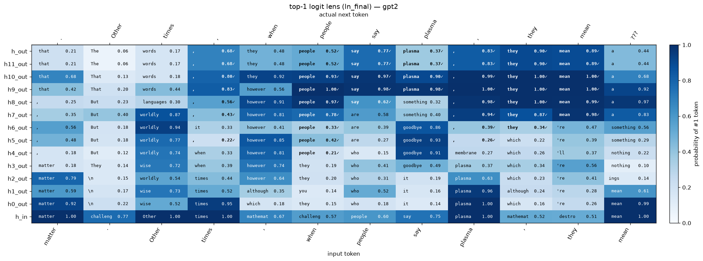
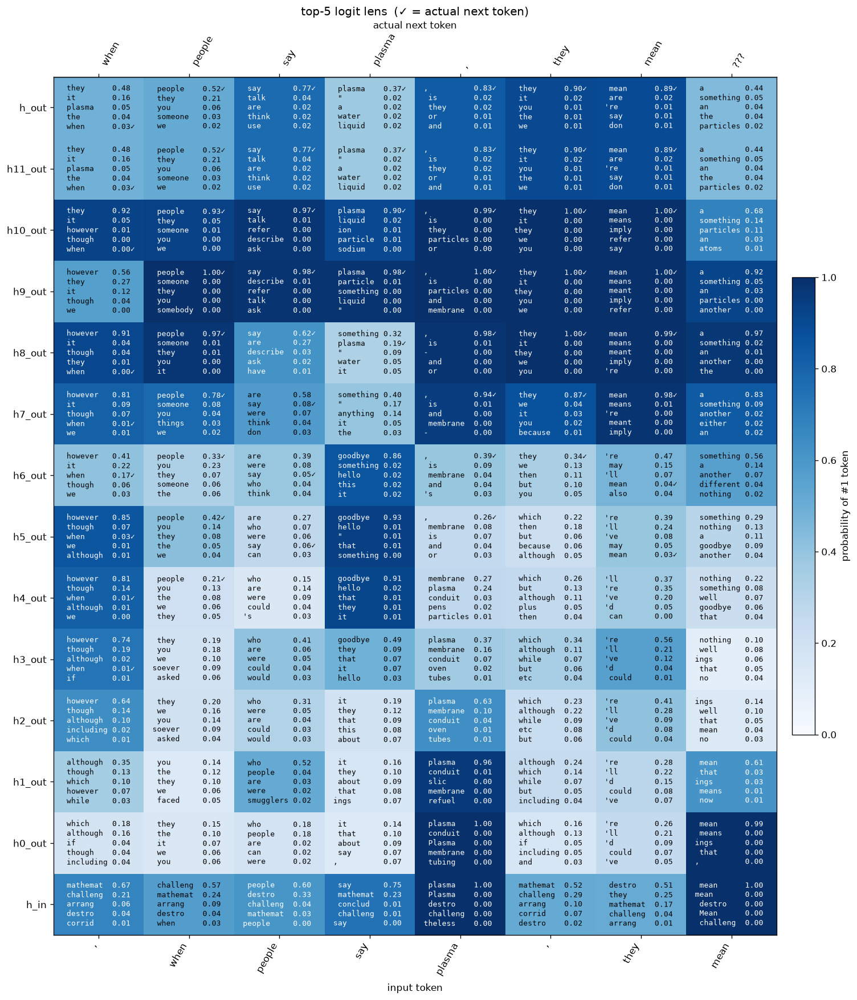
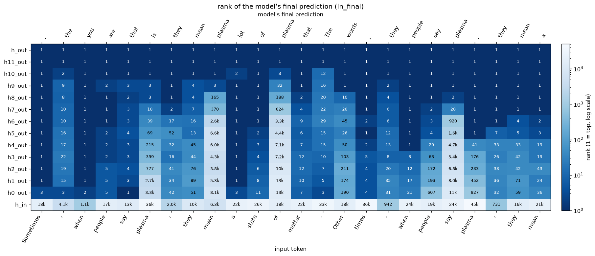
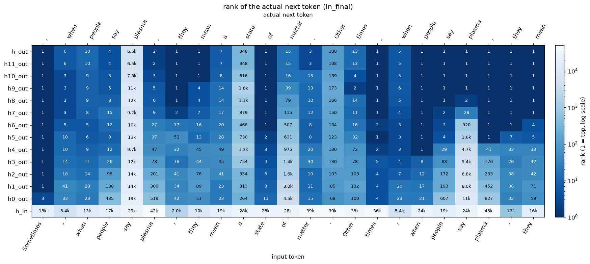
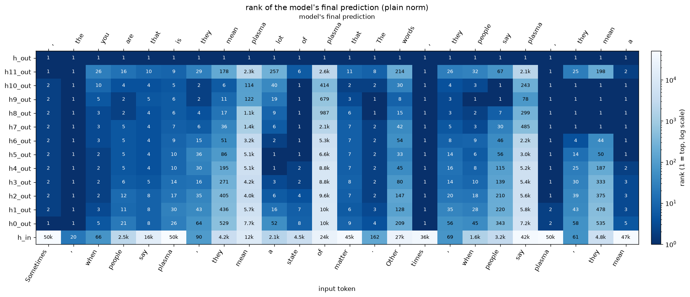
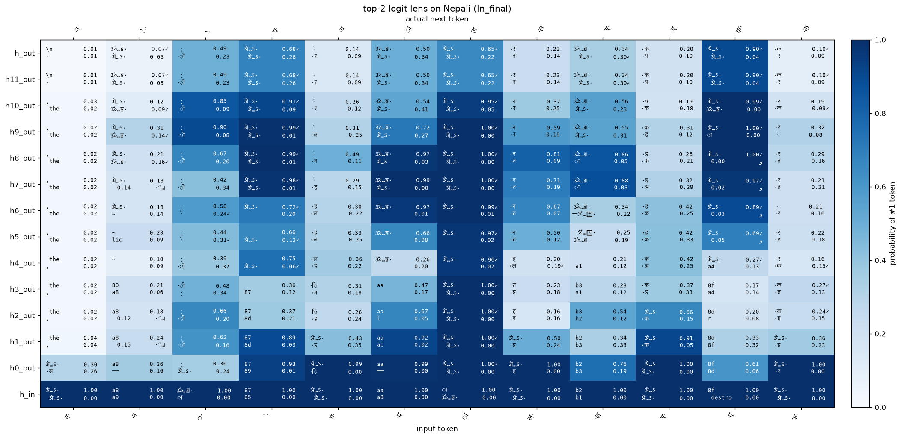

The Logit Lens in PyTorch
A hands-on walkthrough of the logit lens on GPT-2 with PyTorch and TransformerLens:
decode the residual stream after every layer, see why ln_final matters,
and plot top-k and rank heatmaps to watch the model find its answer.
Goal: watch GPT-2 build its prediction layer by layer.
GPT-2 is a stack of blocks. Each token has a vector (the residual stream, 768 numbers for gpt2-small) that flows up the stack. Every block reads it and adds its result back:
x = embed(token) + pos_embed(position) ← h_in
x = x + block_0(x) ← h0_out
...
x = x + block_11(x) ← h11_out
logits = unembed(ln_final(x)) ← h_out (the model's real prediction)
Normally only the last x becomes a prediction. The logit lens applies the same "vector → word scores" step to every intermediate x, so we can see when the model figures out the next token.
Shape convention used in comments:
[layers, seq, d_model]etc. When something breaks, print.shapefirst.
1. Setup
1.1 Imports and device
torch.set_grad_enabled(False): we only run the model forward, never train. This stops PyTorch from storing extra memory for backprop.device:"mps"is Apple Silicon's GPU (the Mac equivalent of"cuda"). All tensors in one operation must be on the same device.font.familyis a list: matplotlib uses the first font that has each glyph. DejaVu Sans has no Devanagari, so those characters fall back to Kohinoor Devanagari. Arial Unicode MS covers almost everything else (Hebrew, Japanese, …) the lens might predict. Both ship with macOS.
import torch
import numpy as np
import matplotlib.pyplot as plt
from matplotlib.colors import LogNorm
from transformer_lens import HookedTransformer
torch.set_grad_enabled(False)
plt.rcParams["figure.dpi"] = 120 # sharper text in the notebook
plt.rcParams["font.family"] = ["DejaVu Sans", "Kohinoor Devanagari", "Arial Unicode MS"] # later fonts = fallbacks for missing glyphs
device = "mps" if torch.backends.mps.is_available() else "cpu"
print(f"Using device: {device}")Using device: mps1.2 Load the model
- Start with
"gpt2"(124M) for fast iteration, then change only this string to"gpt2-medium","gpt2-large", or"gpt2-xl"and rerun everything. from_pretrained_no_processingkeeps OpenAI's weights exactly as released. The defaultfrom_pretrainedrewrites them (folds LayerNorm, centers the unembedding), which changes raw logit values.- A model is an
nn.Module: it holds parameters (weight tensors), submodules (blocks, layer norms…) and aforwardmethod (what runs when you callmodel(x)).
model_name = "gpt2"
# later: "gpt2-medium", "gpt2-large", "gpt2-xl"
model = HookedTransformer.from_pretrained_no_processing(model_name, device=device)
model.eval()
cfg = model.cfg
print(f"layers: {cfg.n_layers}")
print(f"d_model: {cfg.d_model}")
print(f"vocab size: {cfg.d_vocab}")
print(f"max tokens: {cfg.n_ctx}")Loaded pretrained model gpt2 into HookedTransformer
layers: 12
d_model: 768
vocab size: 50257
max tokens: 10241.3 Poke at the weights
- Every tensor has a shape, dtype, and device. Check them constantly.
W_E[vocab, d_model]: token id → vector.W_U[d_model, vocab]: vector → one score per vocab token.- GPT-2 ties them:
W_U == W_E.T. Soh_in @ W_Umostly scores the current token highest (a vector lines up best with itself). - The parameter count is ~163M, not 124M, because TransformerLens stores
W_EandW_Uas two separate tensors (38.6M each). The original model shares one.
W_E = model.W_E
W_U = model.W_U
print("W_E:", W_E.shape, W_E.dtype, W_E.device)
print("W_U:", W_U.shape, W_U.dtype, W_U.device)
# GPT-2 ties the embedding and unembedding
print("W_U == W_E.T ?", torch.equal(W_U, W_E.T))
n_params = sum(p.numel() for p in model.parameters())
print(f"parameters: {n_params:,} (W_E counted twice → minus {W_E.numel():,} = {n_params - W_E.numel():,})")W_E: torch.Size([50257, 768]) torch.float32 mps:0
W_U: torch.Size([768, 50257]) torch.float32 mps:0
W_U == W_E.T ? True
parameters: 163,087,441 (W_E counted twice → minus 38,597,376 = 124,490,065)2. Tokens and one forward pass
2.1 Text → tokens
- The model only sees integer IDs (
int64) from a 50,257-entry vocabulary.' plasma'(with its leading space) is a different token from'plasma'. - Shape
[1, seq]: the leading 1 is the batch dimension. Models always expect one. prepend_bos=False: no<|endoftext|>at the start, so every position is a real word, and output rowipredicts input tokeni+1.[:, :max_tokens]caps the sequence length (memory: logits arelayers × seq × 50257floats). Note the:,in front.tokens[:n]would slice the batch dim instead.
Why this text? ' plasma' is rare, but the second half repeats the first. A smart model should copy it. The lens shows at which layer it figures that out.
text = (
"Sometimes, when people say plasma, they mean a state of matter. "
"Other times, when people say plasma, they mean"
)
# text = (
# "Nepal ist ein Himalaya-Staat mit sehr vielen Bergen."
# )
max_tokens = 200
tokens = model.to_tokens(text, prepend_bos=False)[:, :max_tokens] # [1, seq]
seq = tokens.shape[1]
print("shape: ", tokens.shape)
print("dtype: ", tokens.dtype)
print("device:", tokens.device)
print(tokens[0, :8])
print(model.to_str_tokens(tokens[0]))shape: torch.Size([1, 24])
dtype: torch.int64
device: mps:0
tensor([15468, 11, 618, 661, 910, 16074, 11, 484],
device='mps:0')
['Sometimes', ',', ' when', ' people', ' say', ' plasma', ',', ' they', ' mean', ' a', ' state', ' of', ' matter', '.', ' Other', ' times', ',', ' when', ' people', ' say', ' plasma', ',', ' they', ' mean']2.2 Byte-level tokens: honest labels for fragments
GPT-2's tokenizer works on UTF-8 bytes, not characters. English letters are 1 byte and got merged into whole-word tokens. Other scripts get cut up:
| text | chars | bytes | tokens |
|---|---|---|---|
The cat sat on the mat. |
23 | 23 | 7 |
Die Katze saß auf der Matte. |
28 | 29 | 10 (split words, but whole characters) |
नेपाल एक सुन्दर देश हो। |
23 | 61 | 37 (characters split into bytes) |
Every Devanagari character is 3 bytes (न = e0 a4 a8), and GPT-2 usually stores it as 2 tokens: e0 a4 + a8. tokenizer.decode([id]) on half a character can't make text and prints �.
Labels used from here on (· marks where a character is cut):
| token | label | meaning |
|---|---|---|
input e0 a4, then input a8 |
न· then ·न |
first and last piece of न (the whole text is known, so this is exact) |
predicted a8 right after an input ending in e0 a4 |
·न |
the prediction finishes a character the input started |
predicted e0 a4 |
ऄ…ह· |
"some character from ऄ to ह" (everything whose bytes start e0 a4). The model has not chosen a letter yet, so we show the range, never one letter |
| predicted byte that fits nothing | a8 |
no real character, keep the hex |
Python/bytes notes
- GPT-2 stores each byte as a printable stand-in character (
' '→'Ġ').bytes_to_unicode()is that table; we invert it to get real bytes back. - A UTF-8 first byte says the character's length:
< 0x80→ 1,< 0xE0→ 2,< 0xF0→ 3, else 4. Continuation bytes are always0x80–0xBF, sox >= 0xC0finds where a character starts. try: b.decode("utf-8")/except UnicodeDecodeErroris used as a test: success means the bytes form complete characters.start_rangescans every code point of that byte length and keeps the readable ones (Unicode category Letter/Number/Punctuation/Symbol) whose bytes start with the fragment. Combining marks likeिare skipped as endpoints because on their own they render as a dotted circle.@functools.lru_cacheremembers each answer, so the scan runs once per fragment..tolist()/int(...): the tokenizer wants plain Python ints, not tensors.- Predictions at position
poscome right after inputs0..pos, so they're labeled with contextids[:pos + 1]. The same token can get a different label in a different context. - ✓ checks now compare token ids, not strings (two different tokens can print the same).
import functools
import unicodedata
from transformers.models.gpt2.tokenization_gpt2 import bytes_to_unicode
_byte_decoder = {ch: b for b, ch in bytes_to_unicode().items()}
def token_bytes(token_id) -> bytes:
# The raw UTF-8 bytes a token stands for.
return bytes(_byte_decoder[ch] for ch in model.tokenizer.convert_ids_to_tokens(int(token_id)))
def utf8_len(lead: int) -> int:
# How many bytes a character has, read from its first byte.
return 1 if lead < 0x80 else 2 if lead < 0xE0 else 3 if lead < 0xF0 else 4
def label_inputs(ids) -> list[str]:
# One label per input token. '·' marks where a character is cut: 'न·' then '·न'.
pieces = [token_bytes(i) for i in ids]
text = b"".join(pieces).decode("utf-8", errors="replace")
spans, pos = [], 0 # (start_byte, end_byte, char) for each character
for ch in text:
n = len(ch.encode("utf-8"))
spans.append((pos, pos + n, ch))
pos += n
labels, start = [], 0
for piece in pieces:
end = start + len(piece)
label = ""
for s, e, ch in spans:
if s < end and e > start: # this character overlaps this token
label += ("·" if s < start else "") + ch + ("·" if e > end else "")
labels.append(label)
start = end
return labels
@functools.lru_cache(maxsize=None)
def start_range(frag: bytes) -> str:
# First…last readable character whose UTF-8 bytes start with frag, e.g. b'\xe0\xa4' → 'ऄ…ह'.
n = utf8_len(frag[0])
lo, hi = {2: (0x80, 0x800), 3: (0x800, 0x10000), 4: (0x10000, 0x110000)}.get(n, (0, 0))
chars = [chr(cp) for cp in range(lo, hi)
if unicodedata.category(chr(cp))[0] in "LNPS" # letters, numbers, punct, symbols
and chr(cp).encode("utf-8").startswith(frag)] # (skips marks, unassigned, surrogates)
return f"{chars[0]}…{chars[-1]}" if chars else frag.hex(" ")
def dangling_bytes(ids) -> bytes:
# Bytes at the end of the input that don't yet form a complete character.
b = b"".join(token_bytes(i) for i in ids)
for k in range(4):
try:
b[:len(b) - k].decode("utf-8")
return b[len(b) - k:]
except UnicodeDecodeError:
pass
return b""
def label_prediction(prev_ids, pred_id) -> str:
# Label for a token predicted right after prev_ids.
b = token_bytes(pred_id)
try:
return b.decode("utf-8") # 1. complete by itself
except UnicodeDecodeError:
pass
try:
return "·" + (dangling_bytes(prev_ids) + b).decode("utf-8") # 2. finishes the input's half-character
except UnicodeDecodeError:
pass
starts = [k for k, x in enumerate(b) if x >= 0xC0] # 3. ends by starting a new character
if starts:
i = starts[-1] # the last character is the unfinished one
try:
return b[:i].decode("utf-8") + start_range(b[i:]) + "·"
except UnicodeDecodeError:
pass
return b.hex(" ") # 4. orphan continuation byte
# Demo: decode() vs. honest labels
demo = model.to_tokens("नेपाल एक", prepend_bos=False)[0].tolist()
print("decode():", [model.tokenizer.decode([t]) for t in demo])
print("labels: ", label_inputs(demo))
print("predict e0 a4 after 'न' :", label_prediction(demo[:2], demo[0]))
print("predict a8 after 'e0 a4':", label_prediction(demo[:1], demo[1]))
print()
print("this text:", label_inputs(tokens[0].tolist()))decode(): ['�', '�', '�', '�', '�', '�', 'ा', '�', '�', ' �', '�', '�', '�']
labels: ['न·', '·न', 'े·', '·े', 'प·', '·प', 'ा', 'ल·', '·ल', ' ए·', '·ए', 'क·', '·क']
predict e0 a4 after 'न' : ऄ…ऽ·
predict a8 after 'e0 a4': ·न
this text: ['Sometimes', ',', ' when', ' people', ' say', ' plasma', ',', ' they', ' mean', ' a', ' state', ' of', ' matter', '.', ' Other', ' times', ',', ' when', ' people', ' say', ' plasma', ',', ' they', ' mean']2.3 Run once, cache everything
logits[batch, seq, vocab]: the model's normal output. One score per vocab token at every position.cache: every intermediate activation (208 for gpt2-small), collected with hooks (small functions PyTorch runs whenever a layer produces output).- The lens only needs the residual stream:
cache["resid_pre", 0](before any block) andcache["resid_post", L](after blockL).
logits, cache = model.run_with_cache(tokens)
print("logits:", logits.shape)
print("number of cached activations:", len(cache))
print(list(cache.keys())[:14])logits: torch.Size([1, 24, 50257])
number of cached activations: 208
['hook_embed', 'hook_pos_embed', 'blocks.0.hook_resid_pre', 'blocks.0.ln1.hook_scale', 'blocks.0.ln1.hook_normalized', 'blocks.0.attn.hook_q', 'blocks.0.attn.hook_k', 'blocks.0.attn.hook_v', 'blocks.0.attn.hook_attn_scores', 'blocks.0.attn.hook_pattern', 'blocks.0.attn.hook_z', 'blocks.0.hook_attn_out', 'blocks.0.hook_resid_mid', 'blocks.0.ln2.hook_scale']2.4 Verify the cache by hand
Never trust a cache you haven't checked.
- Layer 0 = embedding + position embedding.
W_E[tokens]picks one row per token id ([1, seq]→[1, seq, 768]).W_pos[:seq]is[seq, 768], and broadcasting (shapes align from the right) adds it to every sequence in the batch. - Output of block L = input of block L+1. Same tensor, so we use
torch.equal(bit-exact).allcloseis for results from different computations, where floating-point order differs.
x0 = cache["resid_pre", 0] # [1, seq, 768]
manual_x0 = model.W_E[tokens] + model.W_pos[:seq] # [1, seq, 768] + [seq, 768] → broadcast
print("resid_pre 0 == W_E[tokens] + W_pos ?", torch.allclose(x0, manual_x0))
print("resid_post 0 == resid_pre 1 ? ", torch.equal(cache["resid_post", 0], cache["resid_pre", 1]))resid_pre 0 == W_E[tokens] + W_pos ? True
resid_post 0 == resid_pre 1 ? True2.5 Read predictions correctly: row i predicts token i+1
- Compare each prediction with the input one row down, not the same row.
- 24 inputs → 24 predictions. The last row is the guess for token 25 (not in the text, hence
???). - The causal mask makes each row honest: position
ican only attend to positions0…i. - First half: mostly wrong (unguessable). Second half: mostly right (the model copies the repeated phrase).
ids = tokens[0].tolist()
in_labels = label_inputs(ids)
preds = logits[0].argmax(dim=-1).tolist() # [seq] — top token id per position
for i in range(seq):
pred = label_prediction(ids[:i + 1], preds[i]) # prediction i comes right after inputs 0..i
if i + 1 < seq:
actual, mark = in_labels[i + 1], ("✓" if preds[i] == ids[i + 1] else "✗")
else:
actual, mark = "???", ""
print(f"{i:2d} {in_labels[i]!r:14} → {pred!r:12} actual: {actual!r:12} {mark}") 0 'Sometimes' → ',' actual: ',' ✓
1 ',' → ' the' actual: ' when' ✗
2 ' when' → ' you' actual: ' people' ✗
3 ' people' → ' are' actual: ' say' ✗
4 ' say' → ' that' actual: ' plasma' ✗
5 ' plasma' → ' is' actual: ',' ✗
6 ',' → ' they' actual: ' they' ✓
7 ' they' → ' mean' actual: ' mean' ✓
8 ' mean' → ' plasma' actual: ' a' ✗
9 ' a' → ' lot' actual: ' state' ✗
10 ' state' → ' of' actual: ' of' ✓
11 ' of' → ' plasma' actual: ' matter' ✗
12 ' matter' → ' that' actual: '.' ✗
13 '.' → ' The' actual: ' Other' ✗
14 ' Other' → ' words' actual: ' times' ✗
15 ' times' → ',' actual: ',' ✓
16 ',' → ' they' actual: ' when' ✗
17 ' when' → ' people' actual: ' people' ✓
18 ' people' → ' say' actual: ' say' ✓
19 ' say' → ' plasma' actual: ' plasma' ✓
20 ' plasma' → ',' actual: ',' ✓
21 ',' → ' they' actual: ' they' ✓
22 ' they' → ' mean' actual: ' mean' ✓
23 ' mean' → ' a' actual: '???' 2.6 Generation = feed the last prediction back in
A single forward pass never feeds the model its own outputs. Generation takes only the last row's prediction, appends it, and runs again.
.clone()makes a real copy (otherwisegenwould be another name for the same tensor).next_idis 0-dim, and.view(1, 1)makes it[1, 1]sotorch.cat(..., dim=1)can append it:[1, seq]→[1, seq+1].- The first generated token must equal row
seq-1of the table above: same input, same computation.
gen = tokens.clone()
for _ in range(5):
next_logits = model(gen)[0, -1] # last position only → [vocab]
next_id = next_logits.argmax() # 0-dim tensor
gen = torch.cat([gen, next_id.view(1, 1)], dim=1)
print(model.to_string(gen[0]))Sometimes, when people say plasma, they mean a state of matter. Other times, when people say plasma, they mean a state of matter.3. The residual stream
3.1 Stack every layer into one tensor
resid[k, i] = the vector for token i after k stages (h_in = before any block).
torch.stackcreates a new dim (13 ×[1, seq, 768]→[13, 1, seq, 768]).torch.catjoins along an existing dim.resid[:, 0]picks batch 0 and removes that dim →[13, seq, 768].
n_layers = model.cfg.n_layers
resid_list = [cache["resid_pre", 0]] + [cache["resid_post", L] for L in range(n_layers)]
resid = torch.stack(resid_list, dim=0)[:, 0] # [n_layers+1, seq, d_model]
layer_names = ["h_in"] + [f"h{L}_out" for L in range(n_layers)]
print("resid:", resid.shape)
print(layer_names)resid: torch.Size([13, 24, 768])
['h_in', 'h0_out', 'h1_out', 'h2_out', 'h3_out', 'h4_out', 'h5_out', 'h6_out', 'h7_out', 'h8_out', 'h9_out', 'h10_out', 'h11_out']3.2 The vectors grow ~55×, so raw vectors can't be compared
.norm(dim=-1)gives each vector's length. Reductions (sum,mean,max,norm) remove the dim you name.- Every block adds to the stream, so later layers are much longer.
- A logit is a dot product: doubling a vector's length doubles every logit, which makes softmax far more peaked. Without normalization, "confidence rising with depth" would mostly be the vector growing, not the model becoming more certain.
- Same effect in isolation:
softmax([1,2,3]) = [0.09, 0.24, 0.67]butsoftmax([10,20,30]) ≈ [0, 0, 1]. That's temperature.
norms = resid.norm(dim=-1) # [n_layers+1, seq]
print("avg length per layer:", norms.mean(dim=-1)) # [n_layers+1]
pos = 5 # the first ' plasma'
for name, n in zip(layer_names, norms[:, pos]):
print(f"{name:8} {n.item():8.1f}")avg length per layer: tensor([ 5.2213, 56.7894, 79.7874, 164.7807, 177.7331, 187.5569, 200.4401,
211.8063, 227.2110, 251.5142, 284.9094, 372.4250, 481.1713],
device='mps:0')
h_in 5.5
h0_out 65.1
h1_out 65.5
h2_out 74.8
h3_out 83.4
h4_out 87.7
h5_out 92.5
h6_out 103.4
h7_out 122.1
h8_out 144.5
h9_out 174.2
h10_out 237.8
h11_out 304.94. Normalization and the first lens
Two kinds of normalization:
plain: x̂ = (x − mean) / std (no learned parameters)
ln_final: y = x̂ * w + b (w, b: [768], learned for the LAST layer)
4.1 Plain normalization
keepdim=Truekeeps the reduced dim as size 1 ([..., 1]), sox - meanbroadcasts per vector. Without it, the shapes misalign: sometimes an error, sometimes silent garbage.- It operates only on
dim=-1, so it works on[768],[seq, 768], or[layers, seq, 768]unchanged. eps = 1e-5matches GPT-2's LayerNorm and prevents division by ~0 for near-constant vectors.- After normalizing, every vector has length √768 ≈ 27.71: size removed, only direction left.
def plain_norm(x: torch.Tensor, eps: float = 1e-5) -> torch.Tensor:
# Normalize the last dim to mean 0, std 1. No learned parameters.
mean = x.mean(dim=-1, keepdim=True) # [..., 1]
var = ((x - mean) ** 2).mean(dim=-1, keepdim=True) # [..., 1]
return (x - mean) / torch.sqrt(var + eps)
normed = plain_norm(resid) # [n_layers+1, seq, d_model]
v = normed[3, 5]
print("shape:", normed.shape)
print(f"mean: {v.mean().item():.6f} std: {v.std(unbiased=False).item():.6f}")
print("length at each layer (token 5):", normed.norm(dim=-1)[:, 5])shape: torch.Size([13, 24, 768])
mean: -0.000000 std: 0.999999
length at each layer (token 5): tensor([27.7093, 27.7128, 27.7128, 27.7128, 27.7128, 27.7128, 27.7128, 27.7128,
27.7128, 27.7128, 27.7128, 27.7128, 27.7128], device='mps:0')4.2 The real final LayerNorm, and the correctness anchor
ln_finalis its ownnn.Module. Call it like a function.- Check 1:
ln_final(x) == plain_norm(x) * w + b. Now we know exactly what it does. - Check 2:
ln_final(resid[-1]) @ W_U + b_U == the model's logits. This proves we understand the model's output path. Every lens row uses the same@ W_Ustep with a different normalization in front. wranges from ~0.004 to ~17.ln_finalreweights dimensions heavily, it doesn't just rescale.
ln = model.ln_final
print("ln_final.w:", ln.w.shape, " ln_final.b:", ln.b.shape)
print(f"w ranges from {ln.w.min().item():.3f} to {ln.w.max().item():.3f}")
manual = plain_norm(resid[-1]) * ln.w + ln.b
print("ln_final == plain_norm * w + b ?", torch.allclose(ln(resid[-1]), manual, atol=1e-5))
h_out_logits = ln(resid[-1]) @ model.W_U + model.b_U # [seq, vocab]
print("h_out == model logits ?", torch.allclose(h_out_logits, logits[0], atol=1e-3))ln_final.w: torch.Size([768]) ln_final.b: torch.Size([768])
w ranges from 0.004 to 17.419
ln_final == plain_norm * w + b ? True
h_out == model logits ? True4.3 First lens: plain norm on every layer + the real output as the last row
- One matmul does the whole lens.
[13, seq, 768] @ [768, vocab]: leading dims act as batch dims (vectorization, no Python loops). unsqueeze(0)adds a size-1 dim so theh_outrow can betorch.cat-ed onto the stack.(a == b).float().mean()computes the fraction of positions where two predictions agree.- Result:
h11_outandh_outstart from the same vector but agree only ~17% of the time for gpt2-small.wandbmatter a lot. A few dims (e.g. 447, 373) hold a big share of the variance, andln_finalnearly mutes them (w ≈ 0.035) while plain norm keeps them loud.
lens_logits = plain_norm(resid) @ model.W_U # [n_layers+1, seq, vocab] (b_U is all zeros for GPT-2)
h_out_logits = model.ln_final(resid[-1]) @ model.W_U + model.b_U
all_logits = torch.cat([lens_logits, h_out_logits.unsqueeze(0)], dim=0) # [n_layers+2, seq, vocab]
all_probs = all_logits.softmax(dim=-1)
all_tops = all_logits.argmax(dim=-1) # [n_layers+2, seq]
all_layer_names = layer_names + ["h_out"]
print("logits:", all_logits.shape, " probs:", all_probs.shape, " top:", all_tops.shape)
print("probs sum to 1?", all_probs.sum(dim=-1)[0, :3])
agree = (all_tops[-2] == all_tops[-1]).float().mean().item()
print(f"h11_out and h_out agree on top-1 at {agree:.0%} of positions")logits: torch.Size([14, 24, 50257]) probs: torch.Size([14, 24, 50257]) top: torch.Size([14, 24])
probs sum to 1? tensor([1.0000, 1.0000, 1.0000], device='mps:0')
h11_out and h_out agree on top-1 at 17% of positions4.4 The bias b pushes toward common tokens
ln_final.b @ W_U is a fixed logit offset added to every prediction: a "frequent-word prior".
model.to_str_tokens((model.ln_final.b @ model.W_U).topk(8).indices)[',', ' the', ' and', '.', '\n', ' a', ' in', ' to']4.5 Watch one position evolve through the layers
h_inpredicts the input token itself (tied embeddings).- Position 4 (first
' say'): can't know' plasma'. Position 19 (second' say'): the model's real answer is' plasma', but the plain lens never shows it in the middle layers.
def show_position(pos: int):
ids = tokens[0].tolist()
labels = label_inputs(ids)
nxt = labels[pos + 1] if pos + 1 < len(ids) else "???"
print(f"position {pos}: input {labels[pos]!r}, actual next {nxt!r}")
for k, name in enumerate(all_layer_names):
t = all_tops[k, pos].item()
p = all_probs[k, pos, t].item()
mark = "✓" if pos + 1 < len(ids) and t == ids[pos + 1] else ""
print(f" {name:8} {label_prediction(ids[:pos + 1], t)!r:14} p={p:.3f} {mark}")
show_position(4)
print()
show_position(19)position 4: input ' say', actual next ' plasma'
h_in ' say' p=0.980
h0_out ',' p=0.577
h1_out ',' p=0.424
h2_out ',' p=0.441
h3_out ',' p=0.390
h4_out ',' p=0.506
h5_out ',' p=0.481
h6_out ' "' p=0.445
h7_out ' "' p=0.575
h8_out ' "' p=0.851
h9_out ' "' p=0.974
h10_out ',' p=0.828
h11_out ',' p=0.787
h_out ' that' p=0.162
position 19: input ' say', actual next ' plasma'
h_in ' say' p=0.959
h0_out ',' p=0.667
h1_out ',' p=0.456
h2_out ',' p=0.508
h3_out ',' p=0.377
h4_out ',' p=0.462
h5_out ' the' p=0.511
h6_out ' the' p=0.747
h7_out ' the' p=0.613
h8_out ' the' p=0.626
h9_out ' the' p=0.426
h10_out ' the' p=0.724
h11_out ' the' p=0.888
h_out ' plasma' p=0.372 ✓5. Comparing lenses
5.1 A lens with a normalization switch
Intermediate rows use the chosen norm. The last row is always the model's real output (the anchor).
def logit_lens(resid: torch.Tensor, norm: str = "plain") -> torch.Tensor:
# resid: [n_layers+1, seq, d_model] → logits: [n_layers+2, seq, d_vocab]
if norm == "plain":
normed = plain_norm(resid)
elif norm == "ln_final":
normed = model.ln_final(resid)
else:
raise ValueError(f"unknown norm: {norm!r}")
lens_logits = normed @ model.W_U + model.b_U
final_logits = model.ln_final(resid[-1]) @ model.W_U + model.b_U
return torch.cat([lens_logits, final_logits.unsqueeze(0)], dim=0)5.2 Rank of a target token at every layer
Rank = "how many tokens scored higher than the target" + 1. It's cheaper than sorting 50k logits, and it shows a token sitting at rank 2 that a top-1 view would hide.
gather(dim=-1, index=idx)picks one entry per row.indexneeds the same number of dims as the input, and the output hasindex's shape.view(1, -1, 1).expand(rows, -1, 1)reshapes[cols]→[rows, cols, 1]without copying (gatherdoesn't broadcast by itself).lg > target_logitbroadcasts[rows, cols, vocab]vs[rows, cols, 1], then.sum(-1)counts per row.
def ranks_of(lens_logits: torch.Tensor, target_ids: torch.Tensor) -> torch.Tensor:
# lens_logits: [rows, cols, vocab], target_ids: [cols] → ranks: [rows, cols] (1 = top)
idx = target_ids.view(1, -1, 1).expand(lens_logits.shape[0], -1, 1)
target_logit = lens_logits.gather(dim=-1, index=idx)
return (lens_logits > target_logit).sum(dim=-1) + 15.3 Plain vs. ln_final: agreement and the rank of ' plasma'
targets = tokens[0, 1:]has onlyseq-1entries (the last position has no known next token), so we passL[:, :-1]to drop the last position. Otherwise24vs23fails to broadcast.- Result: with
ln_final,' plasma'is rank 1 fromh9_outon (rank 2 ath8_out). With plain norm it's rank ~2127 ath11_out. The information is in the vectors, and the plain lens just can't read it (on gpt2-small). h11_outagree = 1.00 underln_final: same input + same function = same output.
targets = tokens[0, 1:] # [seq-1]
for norm in ["plain", "ln_final"]:
L = logit_lens(resid, norm) # [n_layers+2, seq, vocab]
top = L.argmax(dim=-1)
agree = (top == top[-1]).float().mean(dim=-1) # [n_layers+2]
ranks = ranks_of(L[:, :-1], targets) # [n_layers+2, seq-1]
print(f"--- {norm} ---")
for k, name in enumerate(all_layer_names):
print(f" {name:8} agree={agree[k].item():.2f} rank of ' plasma' @ pos 19: {ranks[k, 19].item():>6}")--- plain ---
h_in agree=0.00 rank of ' plasma' @ pos 19: 42972
h0_out agree=0.12 rank of ' plasma' @ pos 19: 7168
h1_out agree=0.08 rank of ' plasma' @ pos 19: 5798
h2_out agree=0.12 rank of ' plasma' @ pos 19: 5572
h3_out agree=0.12 rank of ' plasma' @ pos 19: 5434
h4_out agree=0.17 rank of ' plasma' @ pos 19: 5232
h5_out agree=0.25 rank of ' plasma' @ pos 19: 3009
h6_out agree=0.21 rank of ' plasma' @ pos 19: 2249
h7_out agree=0.29 rank of ' plasma' @ pos 19: 485
h8_out agree=0.33 rank of ' plasma' @ pos 19: 299
h9_out agree=0.42 rank of ' plasma' @ pos 19: 78
h10_out agree=0.33 rank of ' plasma' @ pos 19: 243
h11_out agree=0.17 rank of ' plasma' @ pos 19: 2127
h_out agree=1.00 rank of ' plasma' @ pos 19: 1
--- ln_final ---
h_in agree=0.00 rank of ' plasma' @ pos 19: 24553
h0_out agree=0.04 rank of ' plasma' @ pos 19: 11251
h1_out agree=0.12 rank of ' plasma' @ pos 19: 7952
h2_out agree=0.12 rank of ' plasma' @ pos 19: 6821
h3_out agree=0.12 rank of ' plasma' @ pos 19: 5382
h4_out agree=0.17 rank of ' plasma' @ pos 19: 4660
h5_out agree=0.25 rank of ' plasma' @ pos 19: 1620
h6_out agree=0.33 rank of ' plasma' @ pos 19: 920
h7_out agree=0.46 rank of ' plasma' @ pos 19: 28
h8_out agree=0.54 rank of ' plasma' @ pos 19: 2
h9_out agree=0.62 rank of ' plasma' @ pos 19: 1
h10_out agree=0.83 rank of ' plasma' @ pos 19: 1
h11_out agree=1.00 rank of ' plasma' @ pos 19: 1
h_out agree=1.00 rank of ' plasma' @ pos 19: 15.4 Notes: neither lens is "the truth"
- Although
ln_finalworks better here (e.g.' plasma'at pos 19), neitherln_finalnorplain_normis the true lens. People have trained a separate small correction for each layer: the tuned lens. - Why not?
wandbare learned specifically for the final layer's vectors, so using them on earlier layers assumes those layers use the same "coordinate system".plain_normmakes no such assumption, but it gets swamped by a few huge dimensions thatln_finalhas learned to mute. - Two different questions when reading results:
- Is the model right? → compare
h_outwith the actual text. - Does the lens reflect the model? → compare intermediate rows with
h_out.
- Is the model right? → compare
- A light (low-confidence)
h_outmeans the position was unguessable (e.g. start of a new sentence). The model spreads probability because cross-entropy loss (−log p) punishes near-zero probability on the true token very heavily (−log 0 = ∞).
6. Reusable pipeline: run_example(text)
Everything from sections 2–5 in one call: tokenize → run once → stack the residual stream → apply the lens.
names_filtercaches only what the lens needs (13 tensors instead of 208). This matters for gpt2-xl, where attention patterns alone are huge.- The
assertcatches shape bugs immediately. A missing[:, 0]gives[14, 1, seq, vocab], which every later step would silently accept. - It returns everything the plots need, so plots never depend on globals (rerunning cells out of order can't mix up two texts).
def run_example(text: str, norm: str = "ln_final", max_tokens: int = 200, prepend_bos: bool = False):
# Returns tokens [1, seq], lens_logits [n_layers+2, seq, vocab], layer_names (list of str)
tokens = model.to_tokens(text, prepend_bos=prepend_bos)[:, :max_tokens]
keep = lambda name: name == "blocks.0.hook_resid_pre" or name.endswith("hook_resid_post")
_, cache = model.run_with_cache(tokens, names_filter=keep)
n_layers = model.cfg.n_layers
resid = torch.stack([cache["resid_pre", 0]] + [cache["resid_post", L] for L in range(n_layers)])[:, 0]
assert resid.shape == (n_layers + 1, tokens.shape[1], model.cfg.d_model), resid.shape
layer_names = ["h_in"] + [f"h{L}_out" for L in range(n_layers)] + ["h_out"]
return tokens, logit_lens(resid, norm), layer_names7. Visualization
7.1 Shared plotting helpers
cell_figsizecomputes the figure size from the text that must fit in each cell, sok=5or a bigger font resizes automatically. matplotlib uses inches, fonts use points (72 pt = 1 in); a monospace glyph ≈ 0.6 × fontsize wide, a line ≈ 1.3 × fontsize tall.label_axesholds everything both heatmaps share (row labels, two x-axes, colorbar), so there's one place to edit.cleanshows'\n'and leading spaces visibly.- Both heatmaps label tokens with
label_inputs/label_predictionfrom 2.2, so byte fragments show asन·,·न, orऄ…ह·instead of�.MONOis the monospace font list for cell text (Devanagari glyphs are wider, so columns with Devanagari won't line up perfectly).
clean = lambda s: repr(s)[1:-1]
MONO = ["DejaVu Sans Mono", "Kohinoor Devanagari", "Arial Unicode MS"] # monospace + fallbacks
def cell_figsize(n_rows: int, n_cols: int, lines_per_cell: int = 1, chars_per_line: int = 8,
fontsize: int = 8, pad: tuple = (2.5, 2.5)) -> tuple:
# Figure size in inches so every cell fits its text.
char_w = 0.6 * fontsize / 72
line_h = 1.3 * fontsize / 72
col_w = chars_per_line * char_w + 0.2
row_h = lines_per_cell * line_h + 0.15
return (n_cols * col_w + pad[0], n_rows * row_h + pad[1]) # pad = room for labels & colorbar
def label_axes(ax, fig, im, layer_names, bottom_labels, top_labels, top_title, cbar_label, title):
ax.set_yticks(range(len(layer_names)), layer_names)
ax.set_xticks(range(len(bottom_labels)), [clean(t) for t in bottom_labels], rotation=60, ha="right")
ax.set_xlabel("input token")
top_axis = ax.secondary_xaxis("top")
top_axis.set_xticks(range(len(top_labels)), [clean(t) for t in top_labels], rotation=60, ha="left")
top_axis.set_xlabel(top_title)
fig.colorbar(im, ax=ax, label=cbar_label, fraction=0.03, pad=0.02)
ax.set_title(title)
fig.tight_layout()7.2 Top-k heatmap
How to read it: columns = positions (bottom: input token, top: actual next token). Rows = layers, from h_in at the bottom up to h_out. Each cell lists the lens's top-k guesses. Color = probability of the #1 guess. ✓ = the actual next token (with k=1, the cell is also bold).
- Heavy math stays on the GPU. Only the small
[rows, cols, k]results go to numpy via.cpu().numpy()(matplotlib can't read GPU tensors). vmin=0, vmax=1fixes the color scale so the same shade means the same probability across plots.f"{s:<{max_chars}}"pads each word to a fixed width so the probability column lines up.
def plot_lens_topk(tokens: torch.Tensor, lens_logits: torch.Tensor, layer_names: list[str],
k: int = 3, start: int = 0, end: int | None = None,
title: str = "", fontsize: int = 8, max_chars: int = 10):
assert len(layer_names) == lens_logits.shape[0], f"{len(layer_names)} names for {lens_logits.shape[0]} rows"
ids = tokens[0].tolist()
in_labels = label_inputs(ids)
end = end or len(ids)
probs = lens_logits[:, start:end].softmax(dim=-1) # [rows, cols, vocab]
top_p, top_id = probs.topk(k, dim=-1) # [rows, cols, k] each, sorted high→low
top_p, top_id = top_p.cpu().numpy(), top_id.cpu().numpy()
n_rows, n_cols, _ = top_p.shape
nxt = [in_labels[i + 1] if i + 1 < len(ids) else "???" for i in range(start, end)]
nxt_ids = [ids[i + 1] if i + 1 < len(ids) else -1 for i in range(start, end)]
fig, ax = plt.subplots(figsize=cell_figsize(n_rows, n_cols, lines_per_cell=k,
chars_per_line=max_chars + 6, fontsize=fontsize))
im = ax.imshow(top_p[:, :, 0], cmap="Blues", vmin=0, vmax=1, aspect="auto", origin="lower")
for r in range(n_rows):
for c in range(n_cols):
lines, hit = [], False
for j in range(k):
t = int(top_id[r, c, j])
word = label_prediction(ids[:start + c + 1], t) # context: inputs up to this position
is_next = t == nxt_ids[c]
hit |= is_next
lines.append(f"{clean(word)[:max_chars]:<{max_chars}} {top_p[r, c, j]:.2f}{'✓' if is_next else ' '}")
ax.text(c, r, "\n".join(lines), ha="center", va="center",
fontsize=fontsize, family=MONO,
color="white" if top_p[r, c, 0] > 0.6 else "black",
fontweight="bold" if (hit and k == 1) else "normal")
label_axes(ax, fig, im, layer_names, in_labels[start:end], nxt, "actual next token",
"probability of #1 token", title or f"top-{k} logit lens (✓ = actual next token)")
plt.show()7.3 Rank heatmap
Each cell shows where a tracked token ranks at that layer (dark = near rank 1). Two choices of tracked token:
against= |
tracks | question |
|---|---|---|
"final" |
the model's final top-1 (from h_out) |
When does the eventual answer rise to the top? |
"truth" |
the actual next token | When (if ever) does the model find the right answer? |
LogNorm: ranks span 1 → 50,257, so the color scale is logarithmic (each ×10 gets equal color space).Blues_ris reversed, so low rank (good) = dark.fmt_rankkeeps every cell ≤ 4 characters (24553→24k), so all positions fit in one row."truth"stops atseq-1because the last position has no known next token.tokens[0, start+1 : end+1]is the "rowipredicts tokeni+1" rule as code.
def fmt_rank(r: int) -> str:
# 1..999 as-is, then 1.6k, 24k
if r < 1000:
return str(r)
if r < 10_000:
return f"{r / 1000:.1f}k"
return f"{r // 1000}k"
def plot_ranks(tokens: torch.Tensor, lens_logits: torch.Tensor, layer_names: list[str],
start: int = 0, end: int | None = None, against: str = "final",
title: str = "", fontsize: int = 8):
ids = tokens[0].tolist()
in_labels = label_inputs(ids)
seq = len(ids)
if against == "final": # model's own final top-1
end = end or seq
target_ids = lens_logits[-1, start:end].argmax(dim=-1)
elif against == "truth": # actual next token (last pos has none)
end = min(end or seq, seq - 1)
target_ids = tokens[0, start + 1 : end + 1]
else:
raise ValueError(f"against must be 'final' or 'truth', got {against!r}")
ranks = ranks_of(lens_logits[:, start:end], target_ids).cpu().numpy()
if against == "final":
target_strs = [label_prediction(ids[:start + c + 1], t) for c, t in enumerate(target_ids.tolist())]
else:
target_strs = in_labels[start + 1 : end + 1]
n_rows, n_cols = ranks.shape
norm = LogNorm(vmin=1, vmax=model.cfg.d_vocab)
fig, ax = plt.subplots(figsize=cell_figsize(n_rows, n_cols, chars_per_line=5, fontsize=fontsize))
im = ax.imshow(ranks, cmap="Blues_r", norm=norm, aspect="auto", origin="lower")
for r in range(n_rows):
for c in range(n_cols):
ax.text(c, r, fmt_rank(int(ranks[r, c])), ha="center", va="center", fontsize=fontsize,
color="white" if norm(ranks[r, c]) < 0.35 else "black")
label_axes(ax, fig, im, layer_names, in_labels[start:end], target_strs,
"model's final prediction" if against == "final" else "actual next token",
"rank (1 = top, log scale)", title)
plt.show()7.4 Use them
What to look for:
h_inrow: mostly the input token repeated (tied embeddings).- The second
' say'column:' plasma'climbs24k → … → 920 → 28 → 2 → 1betweenh6_outandh9_out. That's the copying mechanism (likely induction heads) arriving. - Easy repeated tokens (
' they'→' mean') lock in earlier than the rare word. - The
'.'column (next =' Other'):h_outis light and' Other'stays around rank 100+. That's an unguessable position, not a lens failure. - Try
norm="plain"inrun_example: the' say'column never becomesplasma.
tokens, L, names = run_example(text, norm="ln_final")
print("lens logits:", L.shape)
plot_lens_topk(tokens, L, names, k=1, start=12, end=24, title="top-1 logit lens (ln_final) — gpt2")lens logits: torch.Size([14, 24, 50257])
plot_lens_topk(tokens, L, names, k=5, start=16, end=24)
plot_ranks(tokens, L, names, against="final", title="rank of the model's final prediction (ln_final)")
plot_ranks(tokens, L, names, against="truth", title="rank of the actual next token (ln_final)")
# Same text, plain-norm lens: compare the ' say' → ' plasma' column
tokens_p, L_plain, names_p = run_example(text, norm="plain")
plot_ranks(tokens_p, L_plain, names_p, against="final", title="rank of the model's final prediction (plain norm)")
7.5 Non-English text: byte fragments in the lens
With Nepali, most positions are half-characters. Things to look for:
- Early layers confidently predict a first-byte range like
ऄ…ह·. That only means "a Devanagari character comes next" (easy, learned from UTF-8 structure). - After an input like
प·(thee0 a4half), the sensible prediction is a·Xcompletion: the character must be finished before anything else can come. - Middle/late layers often fall back to English (
' the',','): GPT-2 saw very little Nepali, so it has few Nepali-specific features. - A ✓ on a
·Xcell is byte-completion, not understanding the word. Keep that in mind when reading attention patterns too: heads here may be reassembling bytes into characters.
tokens_ne, L_ne, names_ne = run_example("नेपाल एक सुन्दर देश हो।", norm="ln_final")
print("tokens:", tokens_ne.shape[1], " labels:", label_inputs(tokens_ne[0].tolist()))
plot_lens_topk(tokens_ne, L_ne, names_ne, k=2, start=0, end=12, title="top-2 logit lens on Nepali (ln_final)")tokens: 37 labels: ['न·', '·न', 'े·', '·े', 'प·', '·प', 'ा', 'ल·', '·ल', ' ए·', '·ए', 'क·', '·क', ' स·', '·स', 'ु·', '·ु', 'न·', '·न', '्·', '·्', 'द·', '·द', 'र·', '·र', ' द·', '·द', 'े·', '·े', 'श·', '·श', ' ह·', '·ह', 'ो·', '·ो', '।·', '·।']
8. Next steps
- Bigger models: set
model_name = "gpt2-xl"in 1.2 and rerun. Does the plain lens get closer toln_finalon a bigger model? (Memory: logits alone ≈ 50 × 200 × 50,257 × 4 bytes ≈ 2 GB at 200 tokens.) - Which component does the copying? Look at
cache["pattern", L]([batch, head, query, key]) in layers ~5–9 for a head that attends from position 19 to position 5 (the token after the earlier' say'). Then ablate it and check whether' plasma''s rank collapses. - Your own texts:
tokens, L, names = run_example("..."), then plot. prepend_bos=True: does keeping BOS change the early positions?- Further reading: the tuned lens (a learned per-layer correction instead of
ln_final).
Written by Nirajan Paudel
Back to all writing